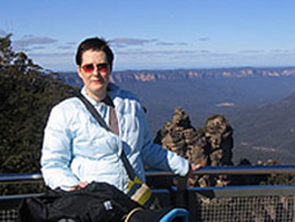
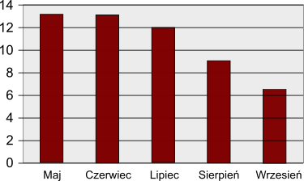

Nowiny Świateł Miasta
Fala upałów związana z klimatyzacją
02Po trzech latach badań naukowcy miejscy zgadzają się, że główną przyczyną fali upałów w 2003 roku było gorące powietrze z naszych urządzeń klimatyzacyjnych. Studium kosztowało miejskiego podatnika mniej niż 10 milionów dolarów
- mówi prof. Stefan 'Zadzwoń do mnie' Przewałek, z Miejskiego Uniwersytetu Wydatków Publicznych na Naukę. Pracowało nad nim pięciu czołowych statystyków: jeden napisał wniosek o dotację, jeden modelował matematycznie, dwóch współpracowało przy pracach nad dokumentem badawczym, a piąty zatrudnił studenta do wykonania zadania.
Twardy Przewałek
Szybko zdaliśmy sobie sprawę, że przy każdej fali upałów obserwujemy wzrost temperatury. Ponadto im więcej klimatyzacji, tym większa fala upałów. Wiedzieliśmy, że nie może być tylko zbieg okoliczności, pasowało w 100%. Klimatyzacja podnosiła temperaturę, co z kolei doprowadziło do fali upałów
wyjaśnił Profesor. Wszystko to wynika ze sposobu, w jaki działa klimatyzacja.06. Klimatyzatory wytwarzają zimne powietrze, które trafia do pomieszczenia, ale także gorące powietrze, które jest odprowadzane na zewnątrz.07. Zalecamy wydanie specjalnego rozporządzenie miejskiego, które ograniczy stosowanie klimatyzacji do miesięcy zimowych, kiedy to ciepło stanie się użyteczne.
Powrót do nadawcy
Kiedy zapytano Przewałka, czy wpłynęłoby to na ich wyniki, gdyby klimatyzatory były używane w chłodne dni, odpowiedział: w laboratorium był jeden facet, który wygłaszał pytania tego rodzaju. 'Dlaczego to robisz? Dlaczego wszystkie rozbieżności występują w rachunkach departamentów?'. Ale to było już po tym, jak zapisaliśmy wyniki. Później odkryliśmy, że 40% swoich dni chorobowych wziął w poniedziałki lub piątki. Jak wygodnie. Niektórzy ludzie nie mają wstydu.
Misja rozpoznawcza Air-Con

Pani B.Przewałek prowadzi rozpoznanie w sprawie transportu gorącego powietrza do Australii.
9 miesięcy za kradzież skrzypiec
Gdy wieści o osądzeniu i skazaniu sławnego złodzieja skrzypiec Pasquale Ginkgo-Biloba dotarła do ratusza, burmistrz Auberon 'Slim' Shadi oświadczył, że jest wściekły na łagodny wyrok wydany przez sędziego w tej sprawie i domaga się rewizji polityki skazującej. Tego rodzaju przestępstwa wymagają bardziej wymyślnych, skutecznych kar. Na przykład możemy żądać udziału w codzinnych koncertach w naszej filharmonii przez 12 miesięcy
- powiedział zirytowany Burmistrz.
Nie po raz pierwszy sędziowie zostali ostrzelani za niskie kary w sprawach związanych z instrumentami muzycznymi. Ubiegłoroczna pechowa falsyfikacja puzonu również została oficjalnie potępiona przez Burmistrza
Twój krzyk
05Cóż, myślę, że burmistrz nabzdyczył się o nic. Pamiętaj, że 15 miesięcy to prawie całe życie dla kogoś takiego jak ja. Ale hej, jestem tylko dzieckiem i nie mogę nawet głosować, więc możesz zignorować moją opinię. I mogę wam powiedzieć, że wystąpię do burmistrza w sprawie zaświadczenia uprawniającego do głosowania w niemowlęctwie
.
Klara F., 15 miesięcy, e-mailem
04Brak mózgów utrudnia badania naukowe
Mózgi darowane szpitalowi miejskiemu (według miesięcy)
09W efekcie wielkiego "sukcesu" kampanii 'Wolna jazda, bezpieczne ulice' nastąpił ogromny spadek darowizn z mózgów - mówią lekarze miejscy. Darowizny z mózgów są niezbędne
powiedział wczoraj podczas konferencji prasowej dr Liam Colluspid ze Szpitala Centralneggo. Muszę zwrócić się do burmistrza. Albo zrezygnuje z tego programu bezpieczeństwa drogowego, albo aby każdy zaangażowany obywatel już teraz zastanowił się, czy ma jakiś mózg, z którego w tej chwili zbytnio nie korzysta i mógłby z niego zrezygnować.